Joomla es un sistema de gestión de contenidos (CMS) libre, de código abierto y desarrollado en PHP, que permite desarrollar sitios web dinámicos e interactivos. En el siguiente enlace encontraréis información más detallada sobre las ventajas de Joomla:
Instalación de Joomla
Para instalar Joomla, he aprovechado el escenario que creé en Vagrant para la instalación de Prestashop, donde he creado un nuevo VirtualHost en Apache con el siguiente contenido:
<VirtualHost *:80>
ServerAdmin webmaster@localhost
ServerName www.lara-joomla.org
ServerAlias www.lara-joomla.org
DocumentRoot /var/www/www.lara-joomla.org
ErrorLog ${APACHE_LOG_DIR}/joomla.error.log
CustomLog ${APACHE_LOG_DIR}/joomla.access.log combined
<Directory /var/www/www.lara-joomla.org>
Options -Indexes
</Directory>
<IfModule mod_dir.c>
DirectoryIndex index.php index.html index.cgi index.pl index.xhtml index.htm
</IfModule>
</VirtualHost>
En primer lugar, nos descargaremos el paquete zip desde la página oficial de descarga y lo pasaremos por scp al servidor:
`scp` Joomla_4.0.4-Stable-Full_Package.zip vagrant@192.168.121.116:/home/vagrant/
Extraemos el contenido del paquete en el directorio raíz con el comando unzip (lo instalamos desde los repositorios si no lo tenemos aún):
sudo unzip -d /var/www/www.lara-joomla.org/ Joomla_4.0.4-Stable-Full_Package.zip
Habilitamos el host virtual y recargamos apache2:
sudo a2ensite www.lara-joomla.org
sudo systemctl reload apache2
A continuación, accedemos a la URL del sitio:
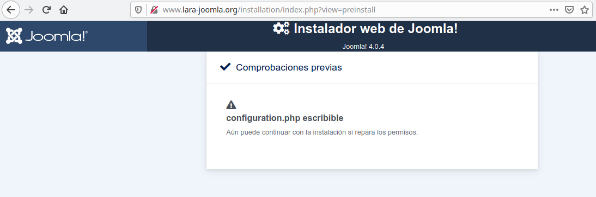
 Parece que tenemos un problema de permisos.
Parece que tenemos un problema de permisos.
Básicamente, lo que nos están diciendo es que Apache no tiene permiso para acceder ni realizar cambios en el fichero de configuración, lo cual impide realizar la instalación de Joomla. Por lo tanto, cambiamos el propietario del directorio raíz y todo su contenido al usuario www-data, que es el usuario de Apache en Debian:
sudo chown -Rf www-data: /var/www/www.lara-joomla.org/
sudo systemctl reload apache2
Ahora sí podemos ejecutar el instalador, por lo que seguimos adelante sin problemas:
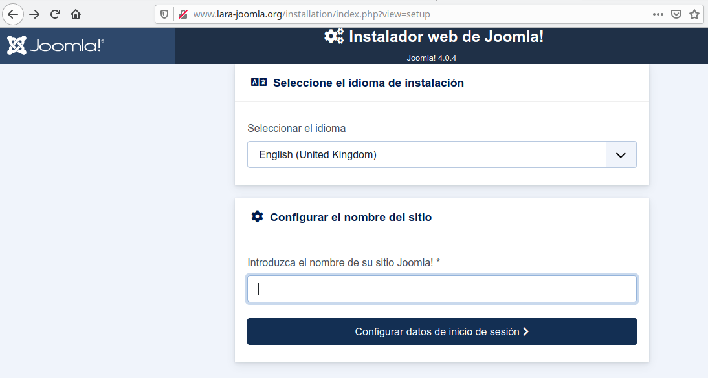 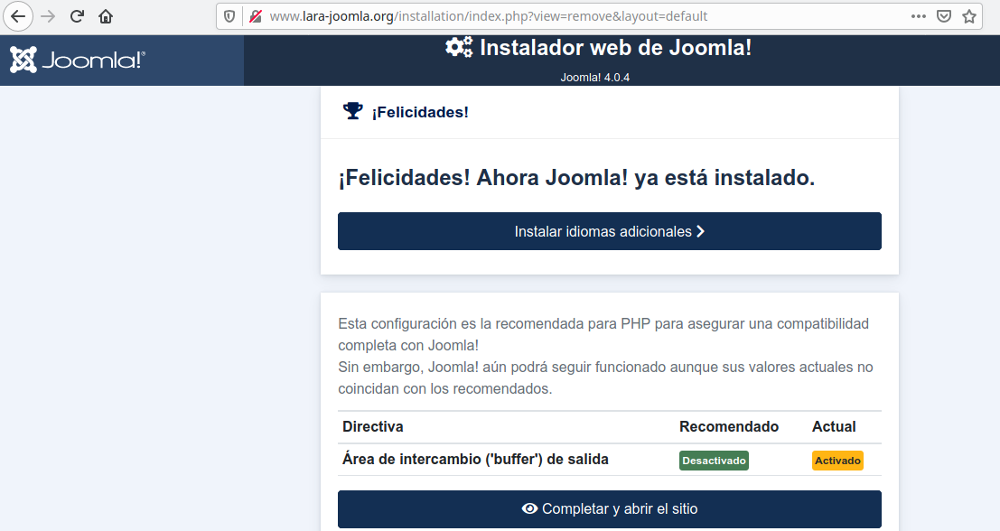
Una vez instalado, ya podemos acceder al sitio. Para acceder como administrador, introducimos el directorio "administrator" en la URL (en mi caso, www.lara-joomla.org/administrator).
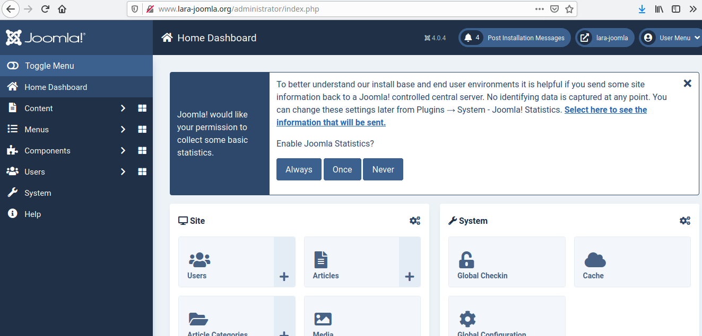 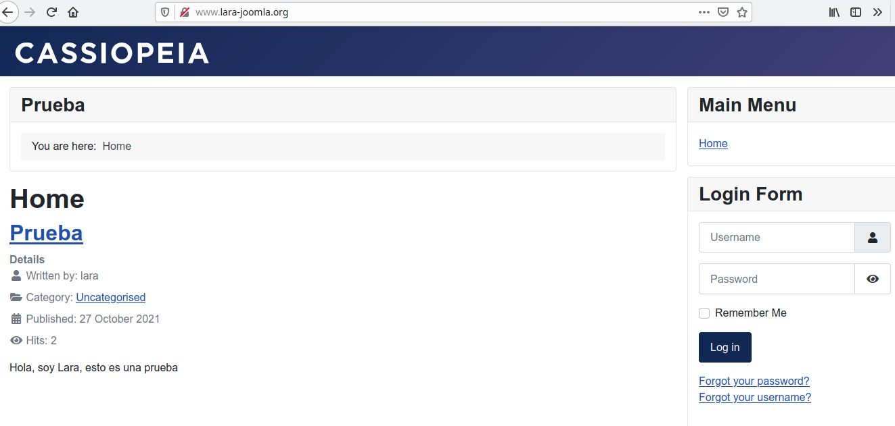
Migración de Joomla a Awardspace
Awardspace es un proveedor de hosting gratuito, que permite alojar aplicaciones CMS y sin anuncios, aunque también incluye diferentes tarifas en las que se nos ofrece más y mejores prestaciones. En el siguiente enlace tenéis disponible un análisis completo de Awardspace:
Para migrar el sitio web, pasaremos todo el contenido del directorio raíz por scp al anfitrión, y desde ahí lo subiremos al gestor de ficheros de AwardSpace.
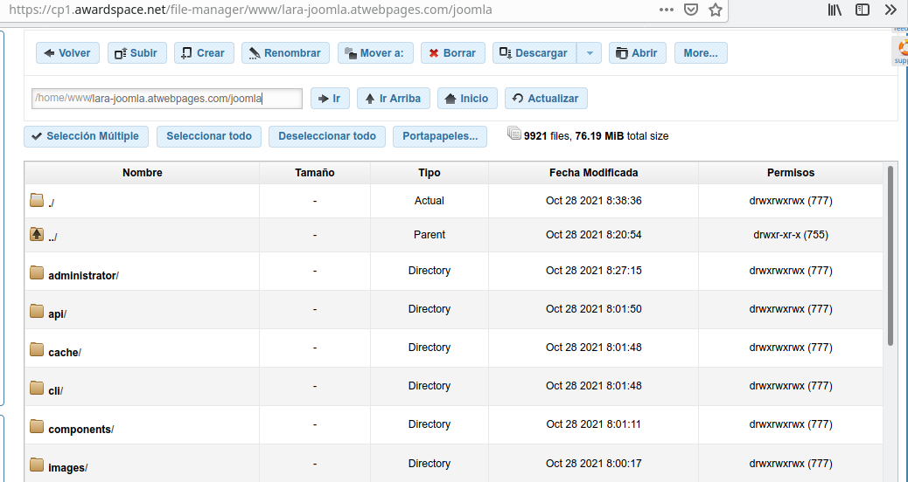
Después, editamos el fichero de configuración de Joomla (configuration.php), donde añadiremos los datos de la base de datos y la ruta del directorio raíz:
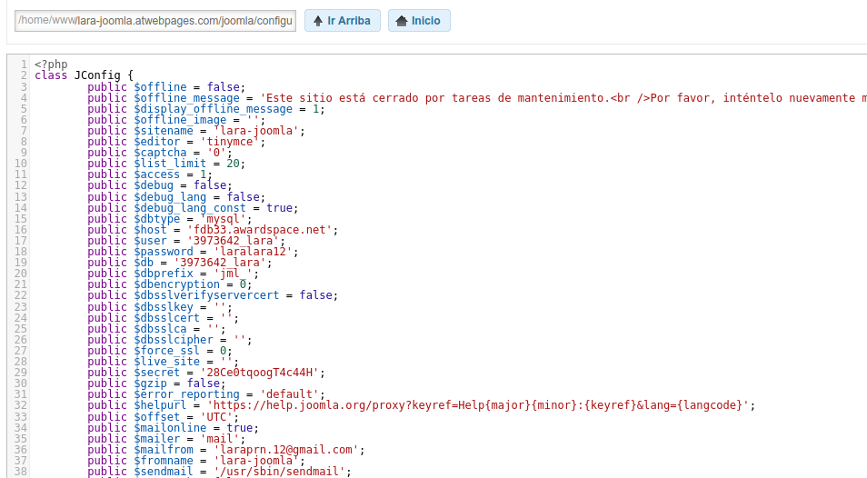
Una vez subidos todo los ficheros del CMS, nos vamos a la sección de bases de datos MySQL, donde creamos una nueva base de datos y un usuario.
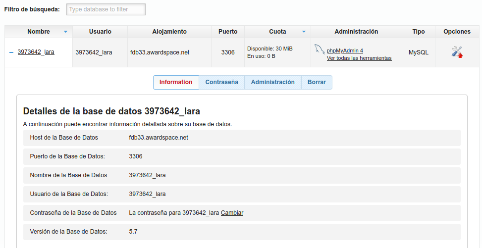
Realizamos una copia de seguridad de la base de datos donde tenemos las tablas de Joomla, y la pasamos al anfitrión por scp:
mysqldump -v --opt --events --routines --triggers --default-character-set=utf8 -u lara -p joomla > db_backup_joomla_`date +%Y%m%d_%H%M%S`.sql
scp db_backup_joomla_20211027_154431.sql lpruna@192.168.1.109:/home/lpruna/
Accedemos a la base de datos que hemos creado en AwardSpace a través de phpmyadmin, que podemos instalar con apt install (véase mi artículo sobre la instalación de phpmyadmin). Una vez dentro, seleccionamos nuestra base de datos en la parte izquierda de la pantalla y subimos la copia de seguridad en la pestaña "Importar":
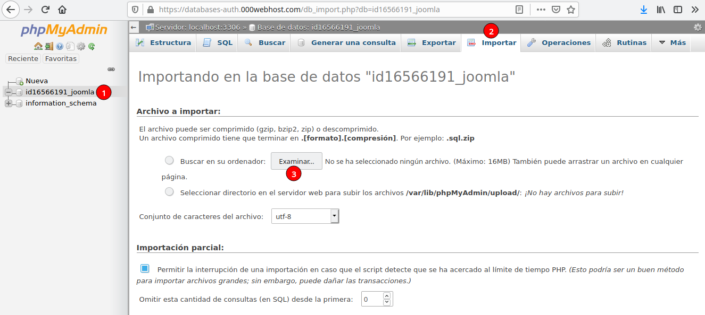 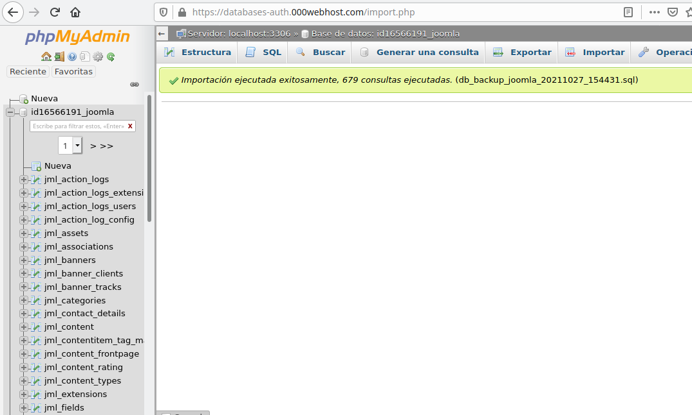
 Ahora podemos acceder al sitio web con el nuevo dominio del hosting:
Ahora podemos acceder al sitio web con el nuevo dominio del hosting:
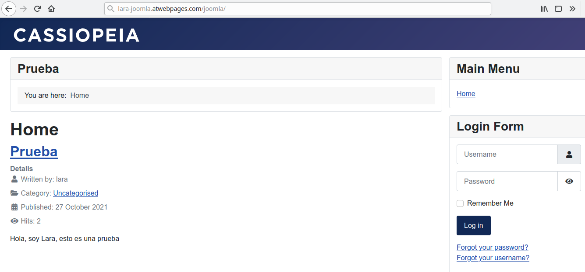